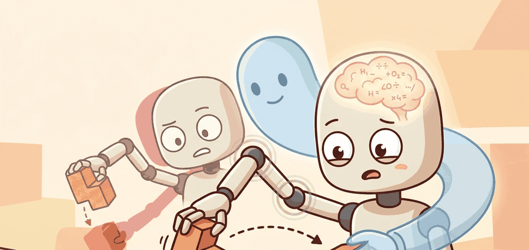

"Demonstrations teach the hand where the search should begin."
A Data-Hungry Dexterity Group

Dexterous manipulation is one of the clearest cases where demonstrations and reinforcement learning complement each other. Demonstrations bootstrap the policy into plausible contact regimes, while RL refines robustness and recovery.
This section explains why dexterous RL often starts from demonstrations or teleoperation data, then fine-tunes with reinforcement learning under domain randomization or privileged critics.
It pulls together offline data, on-policy refinement, and contact-rich evaluation for tasks where random exploration would be too slow or too unsafe to be useful.
Demonstrations do not replace reinforcement learning in dexterity. They cut the exploration problem down to the contact neighborhoods where reinforcement learning can actually discover recovery.
Theory
Pure RL in high-dimensional dexterous action spaces often wastes experience before it even discovers stable contact. Demonstrations move the policy into the right contact manifold, making policy improvement gradients far more useful.
The hybrid pipeline therefore mixes imitation loss, value-based or policy-gradient updates, and heavy randomization. The system still needs an action interface and a recovery-aware reward or verifier to prevent reward hacking.
$$ \mathcal{L}(\theta)=\lambda_{BC}\,\mathcal{L}_{BC}(\theta)-\mathbb{E}_{\pi_\theta}\left[\sum_t r_t\right],\qquad \pi_{\theta_0}\leftarrow \text{BC on demos},\qquad \theta \leftarrow \text{RL fine-tuning} $$
Demonstrations initialize the policy and sometimes the critic, RL rollouts refine the contact behavior under perturbation, and the final policy is evaluated on same-panel dexterous tasks with object diversity, slip, and recovery metrics. The important artifact is the training curriculum plus the real-world evaluation panel.
OpenAI's Dactyl system (2019) is the clearest published case of this pipeline at scale. It used human teleoperation demonstrations to seed a Shadow Dexterous Hand policy, then applied PPO with massive domain randomization across friction, object mass, and sensor delay. The final policy solved arbitrary Rubik's cube face rotations on a physical hand, achieving a task that random RL exploration alone had never reached in that action space. The demonstrations did not teach the final skill; they constrained early exploration enough for RL to find it.
- Collect or curate demonstrations that cover successful contact-entry patterns and partial recoveries.
- Pretrain the policy with imitation until it consistently enters stable contact regimes.
- Fine-tune with RL using perturbations that exercise recovery rather than only nominal success.
- Evaluate on held-out objects and disturbance cases with the same action interface and success code.
Worked Example
# Decide when to switch from pure imitation to RL fine-tuning.
bc_success = 0.78
contact_entry_rate = 0.86
switch_to_rl = bc_success > 0.7 and contact_entry_rate > 0.8
phase = "rl_finetune" if switch_to_rl else "continue_bc"
print({"phase": phase, "bc_success": bc_success, "contact_entry_rate": contact_entry_rate})Expected output: The expected result enters RL fine-tuning because the cloned policy already reaches stable contact often enough to make further exploration useful instead of random.
Consider a specific case: a 16-DOF hand learning to reorient a cube from 50 teleoperation demonstrations. After BC pretraining, the policy reaches the stable grasp contact state in 86% of rollouts but succeeds at the full reorientation in only 31% (it enters the right region but cannot recover from slip). After 2 million RL steps with domain randomization over cube mass (50 to 200 g) and finger friction (0.6 to 1.4), the full-task success rate rises to 74% while the contact-entry rate stays at 84%. The demonstrations provided the contact grammar; RL provided the recovery policy inside it.
robomimic, ManiSkill, Isaac Lab style RL stacks, and dexterous hand simulators provide the right substrate. They save time only if the demonstrations, perturbations, and evaluation panel are specified clearly first.
Practical Recipe
- Record demonstrations with enough variability to teach contact entry and small corrections.
- Measure contact-entry rate explicitly before RL begins.
- Use perturbations during RL that reflect realistic drop, slip, or pose errors.
- Keep behavior-cloning and RL checkpoints for the same task panel so regressions stay visible.
- Treat sim-to-real evaluation as part of the training plan, not as a last-day surprise.
Starting RL too early in dexterous domains often looks like learning progress but is really the policy thrashing around outside the useful contact manifold. The reward may climb because the policy learns to avoid obvious penalties, not because it learns stable contact. A second failure mode appears at the opposite end: if demonstrations cover only a single contact approach (e.g., always grasping from the top), RL cannot discover recovery from orientations the demonstrations never visited, and the policy will drop objects that arrive at the hand from the side. Both failures are diagnosed by separating the contact-entry rate metric from the full-task success metric and tracking them independently throughout training.
Cube reorientation and tool pickup are classic examples where demonstrations give the policy a workable contact grammar, while RL improves disturbance recovery and timing.
Dexterous RL without demonstrations often resembles a pianist learning by punching the keyboard and hoping harmony arrives out of respect.
The frontier mixes demonstrations, diffusion action models, privileged critics, and large tactile or teleoperation datasets. The stable lesson is still that exploration must be biased toward meaningful contact structure.
Could you state which contact behavior the demonstrations teach and which remaining behavior the RL phase is expected to discover?
This section is useful for teaching curriculum design. Students often assume the data question and the RL question are separate, but dexterous learning succeeds precisely because the initial data changes the effective exploration distribution.
It is also a good place to insist on disturbance-aware evaluation. A dexterous policy that only performs on nominal states may have learned choreography rather than robust manipulation.
| Tool or Library | Role in the Topic | Builder Advice |
|---|---|---|
| robomimic | Demonstration-based pretraining | Use it to build strong imitation baselines before adding RL complexity. |
| ManiSkill | Large-scale rollout generation | Useful for broad perturbation panels and GPU throughput. |
| Isaac-style RL stacks | Fine-tuning with randomization | Good when policy improvement needs high simulation throughput and vectorized environments. |
Pretrain a toy dexterous policy on demonstrations, then fine-tune with disturbances. Plot contact-entry rate and recovery rate before and after RL.
If RL regressions appear, ask whether the reward changed the contact style, the perturbations are unrealistic, or the demonstrations covered too narrow a contact manifold.
Section References
Strong benchmark and library for learning manipulation from offline demonstrations.
GPU-enabled manipulation benchmark suite for policy learning.
Open tooling for demonstration datasets and policy training relevant to dexterous learning.
Dexterous RL with demonstrations works by using data to enter the right contact manifold and RL to harden behavior inside it.
Write a curriculum for a dexterous reorientation task that includes one BC phase and one RL phase. State the metric that decides when to switch.